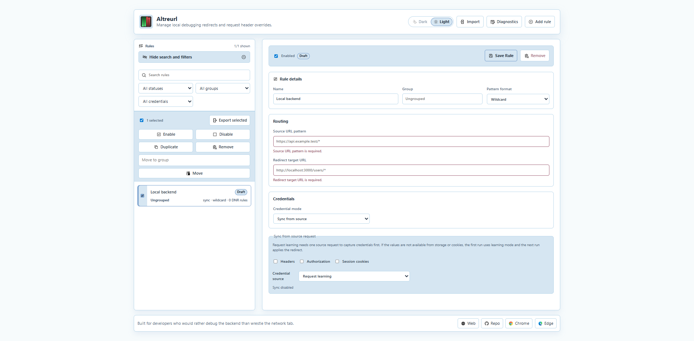
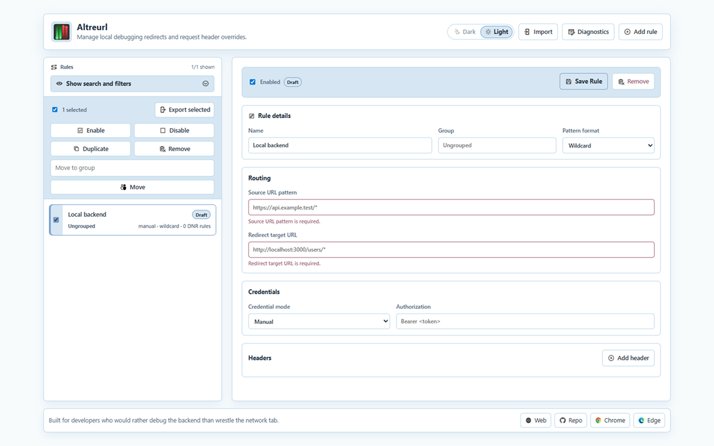

Redirect by pattern
Use wildcard rules for simple paths or regex rules for capture groups.
Chromium Extension MV3
Altreurl helps backend developers redirect API calls, forward debugging credentials, and switch rules from the browser without changing application code.

Core workflow
Use wildcard rules for simple paths or regex rules for capture groups.
Add Authorization and custom headers when local services need explicit context.
Sync selected headers, bearer tokens, cookies, or storage values from source requests.
The popup shows rules for the current tab and lets you enable or disable them quickly.
Preview changes, handle conflicts, and redact credentials before sharing rule files.
Review dynamic rule state and local logs when a setup behaves unexpectedly.
Interface preview

Example rule
Create a source pattern, choose the local target, then decide whether credentials should be manual or synced from the source request.
https://api.example.com/users/*
Redirect target URL
http://localhost:3000/users/*
Credential mode
Sync from source
Export safety
Redact credentials before sharing
Privacy stance
Altreurl stores rules, synced values, and diagnostics locally. Exports happen only when you create them.
Read privacy policy